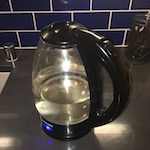
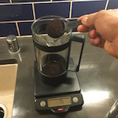
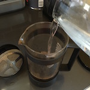
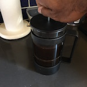
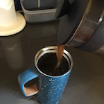

Assemble the Supplies
First, you will need to gather the following supplies.
An X liter French Press coffee maker
At least 45 grams of ground coffee
Scoop
Scale (for weighing coffee)
Some way of boiling water
Timer
A spoon that is long enough reaching into the french press
Cup(s) for drinking the coffee. You'll want enough capacity to hold all the coffee you're going to brew for reasons that are explained later.
Assumptions
The first assumption I'm making is that you're using a standard sized X liter French Press. If you're using something different, then you'll need to adjust the amount of coffee. You can use this handy online proportion calculator if you need help.
The second assumption I'm making is that you like a reasonably strong cup of coffee. If you don't, you'll need to use less grounds and experiment to find your sweet spot.
Preparation
To begin, you'll need to turn on your water-boiling device. Once you've done that, set your timer for 4 minutes BUT don't turn it on. You'll need it at a later step.
Measure Coffee
While you are waiting for the water to boil, you can set up the coffee.
Place the coffee press on the scale and zero it out. Then use the scoop to put ground coffee into your french press. You'll want to add 45 grams of coffee for a strong, but drinkable brew. If you want a stronger or weaker brew, you make the necessary adjustments.Brew the coffee
Once the water hits the boiling point, begin by pouring approximately a 1 cup of water into the press and stir so that there are no pockets of grounds. Once it's all stirred up, continue to pour water up to the fill line. Once you've done that, place the cap back on the French Press and start the timer.
Finish the coffee
 After the timer goes off, push the plunger down. There is no rush to do it, so take your time and don't splash scalding coffee all over the place. Once the plunge is all the way at the bottom, pour the coffee into the cups. You'll want to pour all of the coffee into the cups, as the unused portion will continue to brew, get strong and more bitter.